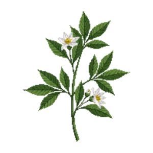

Bush Anemone
Carpenteria californica

Bush Anemone is a shrub for focal point, structure, suited to shade and partial shade and loam, sandy soil or acid soil, flowering Mar, Apr, May, Jun.
| Type | Shrub |
|---|---|
| Mature height | 180 cm |
| Spread | 180 cm |
| Aspect | shade and partial shade |
| Foliage | Evergreen |
| Hardiness | USDA 8a-10b, RHS H4 |
| Pollinator-friendly | Yes |
| Pet-safe | Yes |
Where to use it in a border
At around 180 cm, it sits best toward the back of a border, or on its own as a focal point with room around it. Give it about 180 cm of room to spread. It is hardy across USDA zones 8a to 10b and rated H4 by the RHS, so check it suits your area before planting.
It appears in our lists of shade, sandy soil, acid soil, evergreen plants, pollinator-friendly plants, pet-safe plants.
Flowering through the year
Worth knowing
- Evergreen, so it keeps the border furnished through winter.
- It tolerates acid soil but dislikes shallow chalk.
- It tolerates a shaded, north-facing spot.
- Its flowers are valued by bees and other pollinators.
Good companions
Plants that share its conditions and style, chosen to complement its place in the border:
- Chaparral Currantas a partner at the same level
- Hummingbird Sageto edge in front
- Abelia 'Kaleidoscope'to edge in front
- Catalina Perfumeto edge in front
- Cedros Island Verbenato edge in front
- Chalk Liveforeverto edge in front
Garden styles
Coastal Mediterranean Modern Xeriscape (low-water)
See Bush Anemone set in a full border, with spacing and companions worked out for your own conditions, in Border Builder.
Sources
Bloom timing and hardiness drawn from:
- Calscape CNPS (calscape.org, 2026-05)
- USDA PLANTS (plants.usda.gov, 2026-05)